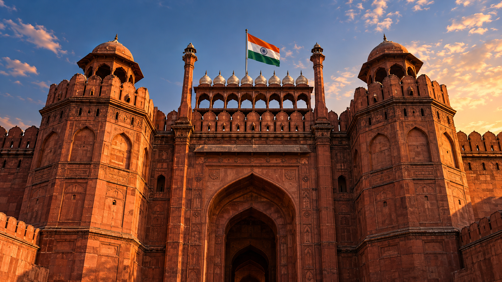
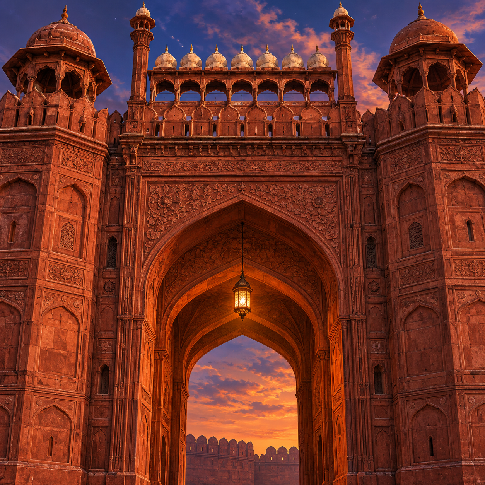
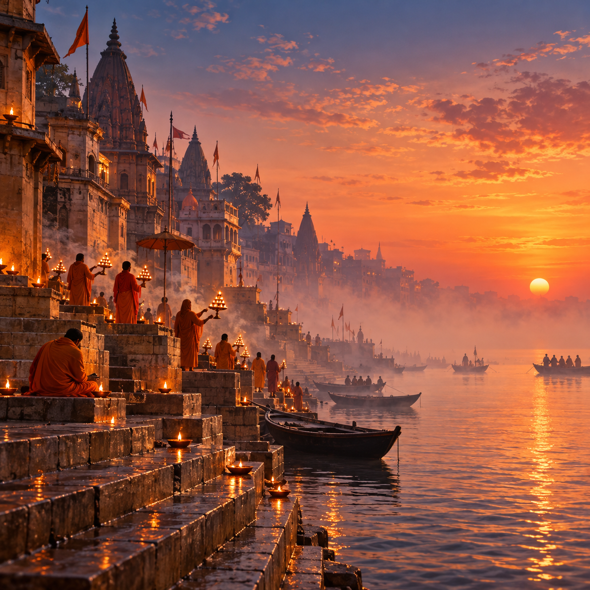
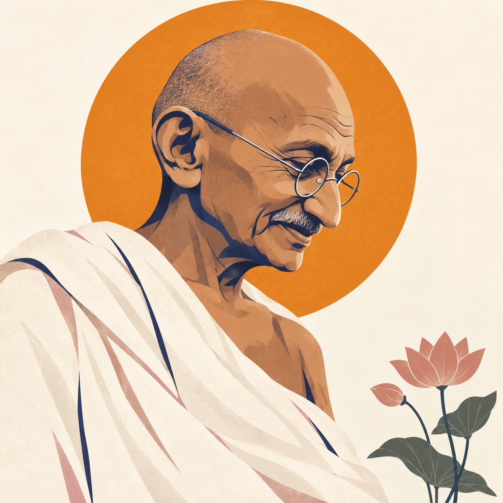
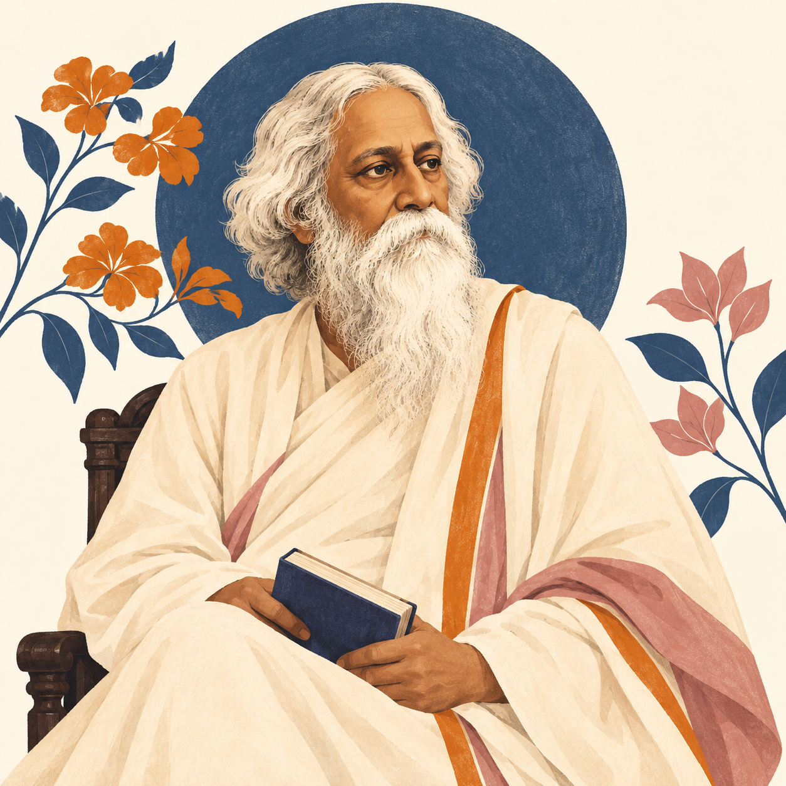
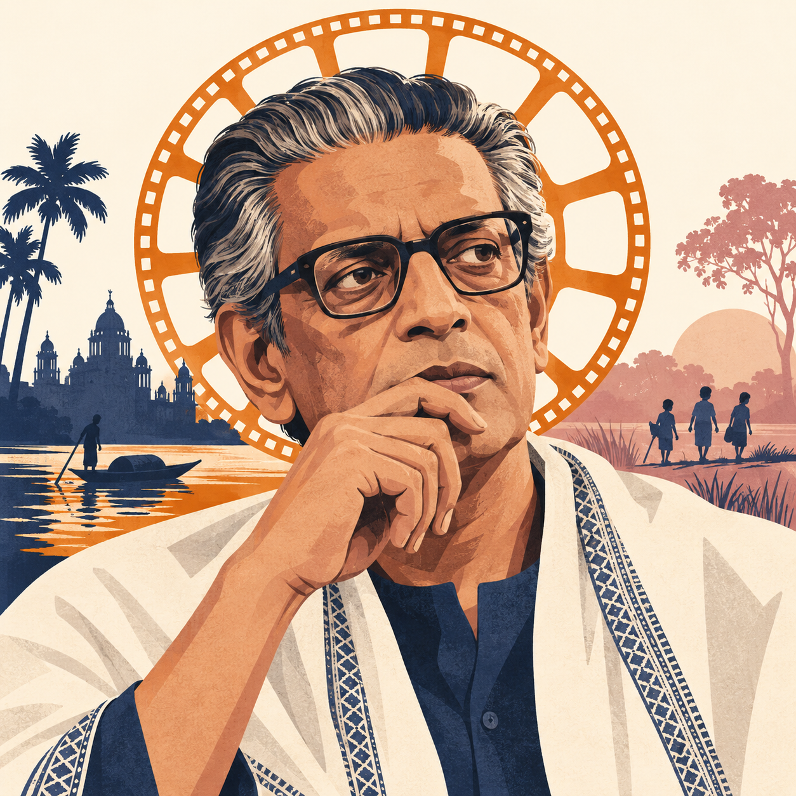
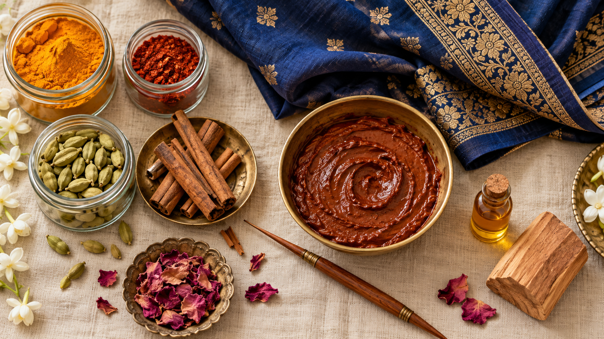
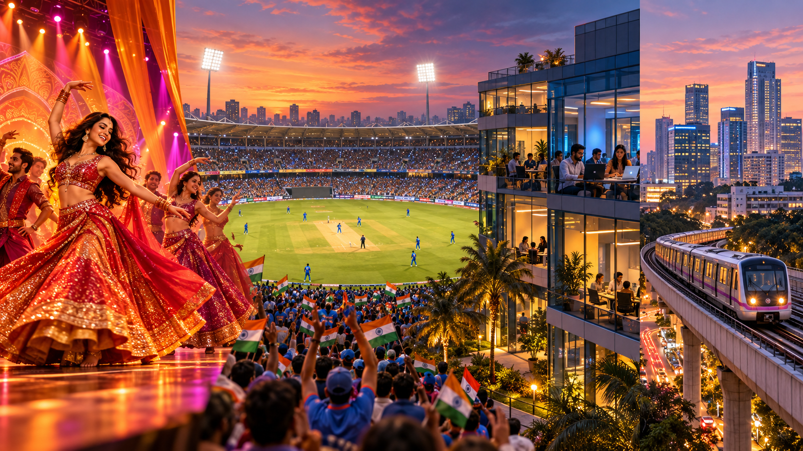
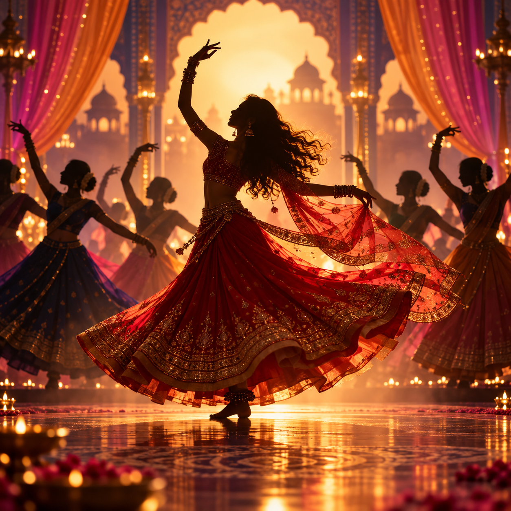
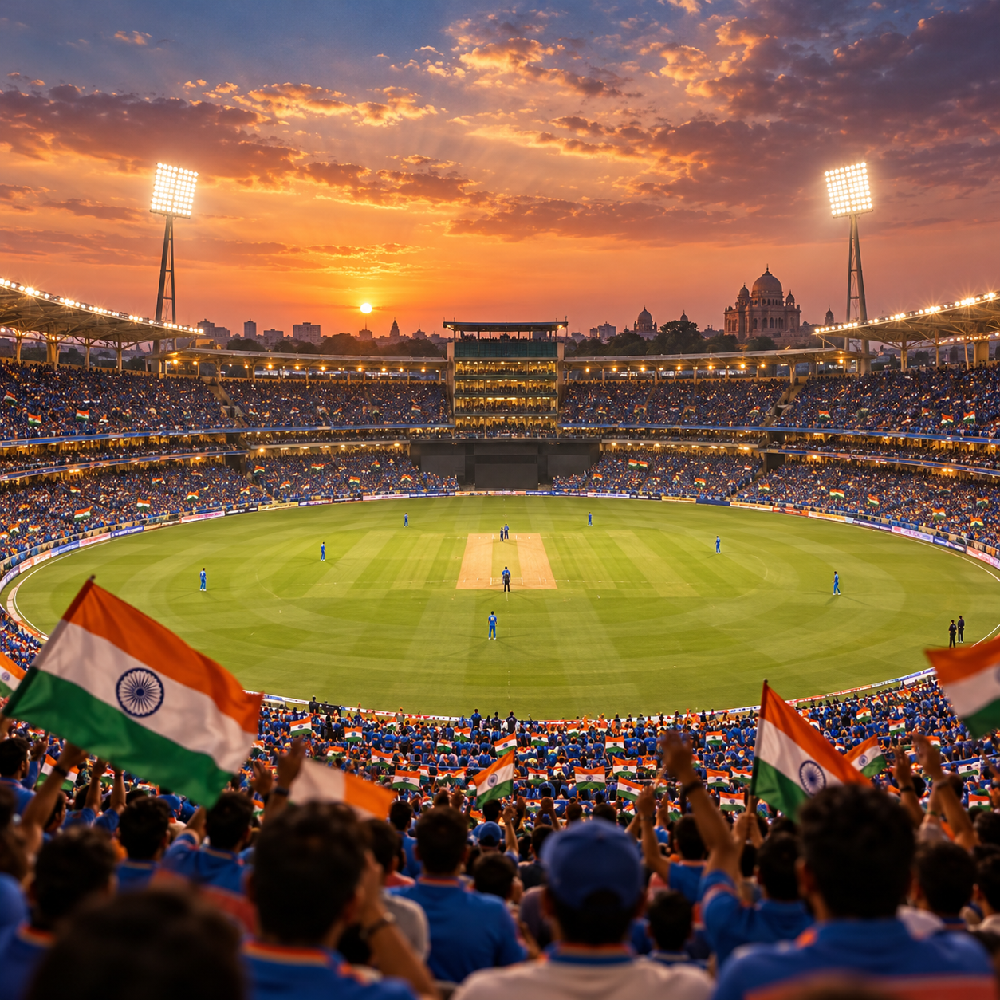

One country, three faces. We walk through Old Delhi's bustling markets to the Red Fort, ride the overnight sleeper to Jaipur to count the 953 windows of the Hawa Mahal, and finish on the stone ghats of Varanasi where the Ganges aarti has been lit every evening for three thousand years. Mughal history. Rajput kings. Hindu pilgrimage. Would · used to · modal verbs.
Three words. What is today about?
India has 22 official languages listed in the constitution — and more than 19,500 dialects. On a 500-rupee banknote you can count 17 scripts, from Devanagari to Tamil to Urdu.
1. Old Delhi is one of the most ⋯ markets in Asia.
2. The Ganges river is ⋯ to Hindus.
3. Every year millions of Hindus make a ⋯ to Varanasi.
4. The Red Fort is a famous part of India's Mughal ⋯.
5. The ⋯ of the Winds has 953 small windows.
6. The ⋯ emperors built the Taj Mahal in the 17th century.
7. The ⋯ kings of Rajasthan built forts of pink and gold.
8. At sunrise, pilgrims walk down the stone ⋯ to the river.
9. India exports more ⋯ than any other country.
10. The ⋯ rains arrive in June and last three months.
Five Things You Didn't Know About India
India is huge, old, and loud with history. Here are five facts most travellers never hear before they arrive.
India is huge, old, and loud with history. Here are five facts most travellers never hear before they arrive.
One. India gave the world the number zero. Around the year 500, the Indian mathematician Aryabhata wrote the first clear description of zero as a number. Without this invention, there would be no modern mathematics — and no computers.
Two. Chess was born here. The ancient game chaturanga was played in India around the year 600. Persian and Arab traders took it west. By the Middle Ages, Europe called it chess. Even the pieces — king, elephant, horse, chariot — are Indian.
Three. India has more official languages than any country in Europe. The constitution lists 22 official languages, and the country counts more than 19,500 dialects. On a 500-rupee note you can see 17 different scripts side by side.
Four. Four world religions were born in India. Hinduism, Buddhism, Jainism and Sikhism all started here. India is also home to the second-largest Muslim population in the world.
Five. Three cities, three faces. If you want to understand India in one week, visit three cities: Delhi for Mughal history, Jaipur for Rajput kings and desert palaces, and Varanasi for the sacred Ganges and Hindu pilgrimage.

In 1526, a young warrior from Central Asia called Babur crossed the Khyber Pass with an army and a small number of cannons. He defeated the local sultan at the battle of Panipat — and founded a dynasty that would rule India for three hundred years. The Mughals had arrived.
They made Delhi their capital, and they built in red sandstone and white marble. The Red Fort, finished in 1648 by Babur's great-great-grandson Shah Jahan, became the heart of imperial India. Inside, the Peacock Throne was covered in diamonds and the famous Koh-i-Noor.
Shah Jahan is better known for a different building. When his wife Mumtaz Mahal died in childbirth, he spent twenty years building her tomb in white marble — the Taj Mahal, about 200 kilometres south of Delhi, in Agra.
In 1947, when India became independent, Prime Minister Nehru raised the national flag not in a new building, but on the walls of the Red Fort — the same walls where Mughal emperors once sat on their throne. Every year on 15 August, the flag goes up there again.
In 1526, a young warrior from Central Asia called Babur crossed the Khyber Pass with an army and a small number of cannons. He defeated the local sultan at the battle of Panipat, and founded a dynasty that would rule India for three hundred years. The Mughals had arrived.
They made Delhi their capital, and they built in red sandstone and white marble. The Red Fort, finished in 1648 by Babur's great-great-grandson Shah Jahan, became the heart of imperial India. Inside, the Peacock Throne was covered in diamonds and the famous Koh-i-Noor.
Shah Jahan is better known for a different building. When his wife Mumtaz Mahal died in childbirth, he spent twenty years building her tomb in white marble — the Taj Mahal, about 200 km south of Delhi, in Agra.
In 1947, when India became independent, Prime Minister Nehru raised the national flag not in a new building, but on the walls of the Red Fort — the same walls where Mughal emperors once sat on their throne. Every year on 15 August, the flag goes up there again.
The Pink City was literally painted pink in 1876 to welcome Prince Albert Edward (future king Edward VII of England). Pink was the colour of hospitality in Rajasthan. By law, the old-city buildings must stay pink to this day.
Words are shuffled — say the question in the correct order. Click any word to hear it.
Three travellers explain why they came to India.

For history lovers, India means the Mughal monuments of Delhi and Agra: the Red Fort, Humayun's Tomb, and above all the Taj Mahal — twenty years of white marble love.
For colour lovers, India means Rajasthan: the Pink City of Jaipur, the Blue City of Jodhpur, the Golden City of Jaisalmer rising out of the desert like a sand castle.

For spiritual seekers, India means Varanasi: pilgrims bathing in the Ganges at sunrise, the evening aarti with fire and bells, and the quiet certainty that this city has been holy for three thousand years.
Click a place name (top), then click the matching drop here next to its description.
Varanasi (also known as Kashi or Benares) is one of the oldest continuously inhabited cities on Earth — people have lived here for over 3,000 years. Mark Twain wrote in 1897: "Benares is older than history, older than tradition, older even than legend."
▶ or tap any bubble below to hear that line (speech synthesis)
| Use | Structure | Example |
|---|---|---|
| Polite wish | I would like + noun / to-verb | I would like to see the Taj Mahal at sunrise. |
| Choice of two | Would you rather + verb + or + verb? | Would you rather see Jaipur or Varanasi? |
| If… | If + past, would + verb | If I had more time, I would visit Jodhpur too. |
Taj Mahal at sunrise — white marble turns pink. Silent. You stand with 200 tourists but somehow it still feels private. Pure visual beauty.
Varanasi aarti — fire, bells, chanting, hundreds of pilgrims and lamps on the water. Loud, warm, overwhelming. Not pretty — but unforgettable.
Thali — a round silver tray with 8–10 small bowls: dal, curry, vegetables, pickle, rice, naan, sweet. Clean restaurant. Safe choice.
Old Delhi street food — chaat, kebabs, jalebi dripping with syrup, 50-year-old family stalls. Delicious. Risky if your stomach is new to it.
Haveli — a 200-year-old Rajput merchant house turned small hotel. Painted courtyards, carved doors, a peacock in the garden. Full of character but no spa.
Luxury Delhi hotel — rooftop pool, air-conditioning, 24-hour room service, five minutes from the airport. Comfortable but could be any country.
Winter (Nov–Feb) — pleasant 20°C, crystal-clear sky, tourist high season, higher prices and more crowds.
Monsoon (Jul–Sep) — hot, wet, the countryside turns bright green, waterfalls at full power, half the price. But some roads flood.
Train — chai vendors, sunrise over fields, 12 hours in a shared compartment. The real India.
Flight — 90 minutes, air-conditioned, easier if you have little time. But you see nothing on the way.
Historian — Mughal emperors, Partition, independence, deep context. Serious.
Young Bollywood fan — film locations, dance clubs, street markets, loud music. Fun, less history.
One week · three cities — focused, you really understand Delhi, Jaipur and Varanasi.
One month · whole country — add Kerala backwaters, Himalayas, Mumbai, Goa beaches. More but shallower.
| Modal | Meaning | Example |
|---|---|---|
| must | strong obligation | You must take off your shoes before entering a temple. |
| mustn't | prohibition | You mustn't photograph people without asking. |
| should | advice | You should drink only bottled water. |
| might | possibility | It might rain even in October. |
| could | possibility / polite request | We could start the day at Humayun's Tomb. |
A Tourist's First Day in India · choose the modal:
Indian Railways carries 23 million passengers every day — more than the entire population of Australia. The classic overnight sleeper from Delhi to Jaipur covers 300 km in 5 to 6 hours and is beloved by foreign tourists.
Short answers using lesson vocabulary.
Repeat the 7 "Would you rather" prompts from section 12 — now spoken aloud. Full sentence + 2 reasons.
Choose 2 prompts and speak for 2-3 minutes on each.

A lawyer trained in London, who found his voice fighting for Indian rights in South Africa and brought his method home.
He led India's independence movement with ahimsa (non-violence) and satyagraha ("truth-force"). His 1930 Salt March — 240 miles on foot to break the British salt tax — turned world opinion against the Empire.
India became independent on 15 August 1947. Gandhi was shot five months later. He never held an official office — yet Indians call him Bapu, father of the nation.
His ideas inspired Martin Luther King and Nelson Mandela.

Poet, novelist, painter, composer, educator — and the first non-European to win the Nobel Prize in Literature (1913), for his collection Gitanjali.
He wrote more than 2,000 songs. Two of them became national anthems: "Jana Gana Mana" (India) and "Amar Shonar Bangla" (Bangladesh). No other poet in history has written anthems for two countries.
In 1901 he founded Shantiniketan, an open-air school in rural Bengal where lessons were taught under trees — a model that still shapes Indian education.
Einstein called him "a far better poet than philosopher — and a far better philosopher than most."

Bengali film-maker, writer, illustrator, composer — a one-man cinema industry. Studied painting under Tagore in Shantiniketan.
His debut Pather Panchali (1955) and the Apu Trilogy that followed changed Indian cinema overnight. Shot on a tiny budget with non-professional actors, they showed real Bengali village life — not Bollywood dreams.
Akira Kurosawa said: "Not to have seen the cinema of Ray means existing in the world without seeing the sun or the moon."
Won an honorary Oscar in 1992 for lifetime achievement — the only Indian ever. He received it from his hospital bed, two weeks before his death.
India makes more films than any other country in the world — around 1,800 feature films every year, in more than 20 languages. Bollywood (Hindi-language cinema) is just the biggest piece of a much larger pie.

India has been a world factory of beauty for 3,000 years. Four exports made the country famous long before oil or software.
Spices. Pepper, cardamom, cinnamon and turmeric from the Malabar Coast started a global trade so valuable that Columbus went looking for India by sea in 1492 and found the Americas by accident. Today India still produces 75% of the world's spices.
Silk saris. A sari is 6 metres of fabric wrapped without a single stitch. The silk saris of Kanchipuram and Varanasi, woven with real gold thread, can take two weavers six months to finish and cost thousands of dollars.
Henna (mehndi). A paste made from the henna plant draws red-brown patterns on the hands and feet of brides. It is 5,000 years old, cools the skin, and lasts two weeks. No Indian wedding is complete without it.
Sandalwood. The scented wood of Mysore sandalwood trees has been burnt in Indian temples for 2,000 years. Its oil is still used in some of the most expensive perfumes in the world.

In the last thirty years India has quietly become one of the biggest economies on Earth. It is still the land of the Taj Mahal and the Ganges, but three things have put it on the global map.
First — Bollywood. India produces around 1,800 feature films every year, more than any other country. A Bollywood blockbuster can be seen by 100 million people in the first week — song-and-dance scenes, three-hour running time, heroes who sing, cry, fight and fall in love in one film.
Second — cricket. The sport came with the British and stayed. Today, when the Indian cricket team plays Pakistan, more than a billion people watch. Stars like Sachin Tendulkar and Virat Kohli are as famous as any Hollywood actor.
Third — the IT boom. The city of Bangalore is now called "India's Silicon Valley". Half of the world's software engineers who work for Google, Microsoft or Amazon are from India. India also runs the cheapest and most ambitious space programme in the world — the Mars Orbiter cost less than the Hollywood film Gravity.

The world's biggest film industry — 1,800 feature films a year. Song, dance, three-hour love stories. Centred in Mumbai.

The national obsession. India vs Pakistan draws a billion viewers. The IPL (Indian Premier League) is now one of the richest sports leagues in the world.
Bangalore = India's Silicon Valley. Software engineers for Google, Microsoft, Amazon. India's Mars Orbiter cost less than the Hollywood film Gravity.
| Tense | When to use | Example (India) |
|---|---|---|
| Present Simple V / Vs | facts · routines · timetables | The Ganges flows through Varanasi. |
| Present Continuous am/is/are + Ving | now · temporary · changing | Right now, the aarti is starting on the ghats. |
| Present Perfect have/has + V3 | life experience · result now · just/ever/never | I have been to Jaipur twice. (life experience) |
| Present Perfect Continuous have/has been + Ving | action started in past, still happening · emphasis on duration | Pilgrims have been coming to Varanasi for 3,000 years. |
Rule of thumb: a date in the past → Past Simple. "Since / for / ever / already" → Present Perfect. "Right now / look!" → Present Continuous.
| Tense | When to use | Example (India) |
|---|---|---|
| Past Simple V2 | finished action in the past (date / time) | Babur crossed the Khyber Pass in 1526. |
| Past Continuous was/were + Ving | action in progress at a past moment · background | While Shah Jahan was building the Taj Mahal, India was already changing. |
| Past Perfect had + V3 | earlier past · action BEFORE another past action | By 1947, the Mughals had ruled India for 300 years. |
| used to / would | past habits that are no longer true | Royal women used to watch the street through 953 small windows. |
Rule of thumb: with a date → Past Simple. "While / when something was happening" → Past Continuous. Action before another past action → Past Perfect. "I used to" = I don't do it now.
| Form | When to use | Example (India) |
|---|---|---|
| will + V | spontaneous decision · prediction · promise | OK, I 'll book the tickets to Jaipur tonight. |
| be going to + V | plan · intention · evidence we see now | We are going to visit the Taj Mahal next spring. (planned) |
| Present Continuous am/is/are + Ving | fixed arrangement (ticket booked, time set) | Our train is leaving Delhi at 10:40 pm tomorrow. |
| Future Perfect will have + V3 | finished BEFORE a future moment | By 8 pm we will have seen three ghats. |
Rule of thumb: planned → going to / Present Continuous. Spontaneous or opinion → will. Finished before a future moment → will have + V3.
| Type | Structure | Example |
|---|---|---|
| Yes / No | Aux + Subject + V ? | Have you been to India? |
| Wh- | Wh- + Aux + Subject + V ? | Where did you fly from? |
| Indirect (polite) | Could you tell me + Wh- + Subject + V ? | Could you tell me where the Taj Mahal is? (not "is the Taj Mahal") |
| Tag | …, auxiliary + pronoun ? | Jaipur is beautiful, isn't it? She loves India, doesn't she? |
Rule of thumb: Direct question — auxiliary first. Indirect question — subject first ("could you tell me where it is"). Negative statement → positive tag, and vice versa.
T/F/NS:
Open questions:
Click each word to hear it. Read the Russian meaning + example. Then type the English word in the box and press Enter. Green = locked in.
| EN | RU | Example | Type & Enter |
|---|---|---|---|
| bustling | суетливый | Old Delhi is a bustling maze of markets. | |
| sacred | священный | The Ganges is sacred to Hindus. | |
| pilgrimage | паломничество | Millions make a pilgrimage to Varanasi. | |
| heritage | наследие | The Red Fort is part of India's Mughal heritage. | |
| palace | дворец | The City Palace of Jaipur still houses the royal family. | |
| fortress | крепость | Amber Fortress rises above a desert valley. | |
| ghat | ступени к реке | The ghats of Varanasi come alive at sunrise. | |
| vibrant | яркий, живой | Jaipur is a vibrant pink city. | |
| spice | специя | India exports more spices than any other country. | |
| blend | смесь | Indian culture is a blend of many religions. |
💡 Finished? Say one sentence out loud using any 3 of the 10 words — the lesson is done.